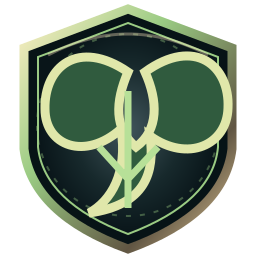

La forge des héritages · Neuf mondes uniques
Ton identité. Ton sanctuaire.
Superpose l’architecture de ton peuple, le monde de ta classe et les signatures de tes métiers. Ce laboratoire n’enregistre rien dans ton profil WoW.
Édition P10 · Œuvres originales locales
8 architectures · 9 mondes · 9 métiers
8 architectures · 9 mondes · 9 métiers
Azeroth · Sanctuaire personnel

Druide · Forêt des anciensSanctuaire des Racines
Héritage tauren, puissance du Druide, rites d’Herboristerie et d’Alchimie.
Tauren · Druide · Herboristerie / AlchimieChapitre I et IILe peuple et la vocation
Prévisualisation uniquement · aucune sauvegarde
Chapitre IIISignatures de métier
2/2 métiers choisis · Aucun changement dans le profil enregistré